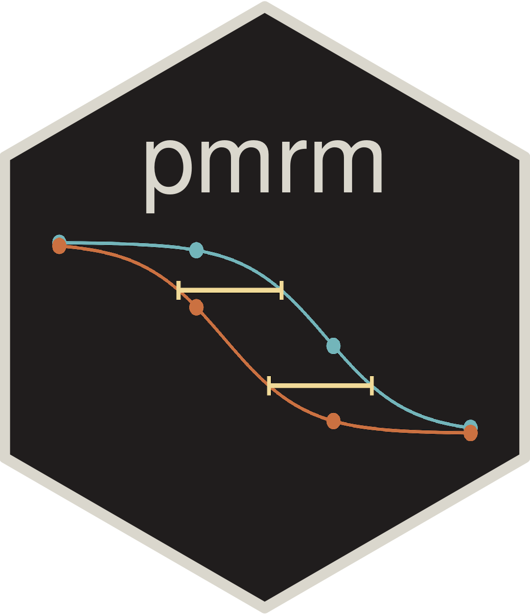

We are delighted to announce that {pmrm} has joined the openpharma GitHub org and is now available on CRAN. This package implements frequentist progression models for repeated measures (PMRMs), a class of continuous-time nonlinear mixed-effects models for longitudinal clinical trials in progressive diseases.

What are PMRMs?
Progression models for repeated measures (PMRMs) are closely related to classical mixed models for repeated measures (MMRMs). However, unlike MMRMs, which estimate treatment effects as linear combinations of additive effects on the outcome scale, PMRMs characterize treatment effects in terms of the underlying disease trajectory. This framing yields clinically interpretable quantities such as:
- Average time saved due to treatment.
- Percent reduction in decline due to treatment.
The underlying methodology was developed by Raket (2022).
Fast and reliable
Previous implementations of PMRMs were slow and often diverged. The {pmrm} package is faster and more reliable thanks to {RTMB}, achieving orders-of-magnitude speedups over equivalent implementations with nlme::gnls(). PMRM analyses that once ran for over 9 minutes now take less than 3 seconds.
{RTMB} by Kasper Kristensen brings the power of CppAD for exact automatic differentiation, Eigen for high-performance matrix-vector operations, and CHOLMOD for efficient sparse matrix computations directly into R. Users can write model code that looks and feels like base R while automatically gaining access to these powerful C++ libraries under the hood. To learn more, please see the official introduction to {RTMB}.
Analyst-friendly features
The {pmrm} package provides first-class functionality for:
- Model-fitting and simulation.
- Post-processing and visualization.
- Marginal mean estimation.
- S3 methods for standard statistical generics.
These features make PMRMs accessible to clinical statisticians and analysts working on trials in progressive diseases.
Installation
You can install {pmrm} from CRAN using:
install.packages("pmrm")Or install the development version from GitHub:
pak::pak("openpharma/pmrm")Learn more
Please visit the package documentation for model definitions, a usage tutorial, and a complete function reference. The source code and issue tracker are available on GitHub.